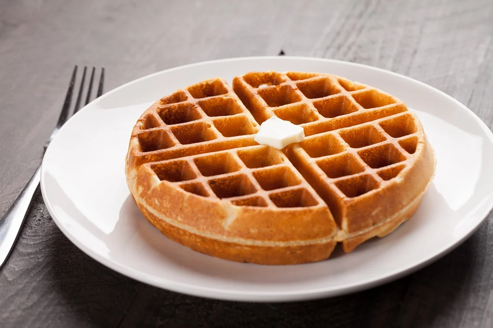

how to make waffles
comedera.com

description
Waffles need no introduction, but let me tell you that it is a preparation made with flour, milk or water, sugar, egg, lard or butter. The mixture that results from combining all these ingredients is thick or dense, which goes through a cooking process for a super crispy and fluffy dish.
Ingredients
- 100 gr of regular wheat flour, not leavened.
- 2 eggs
- 50 gr of melted butter
- 50 ml milk
- 3 tablespoons sugar
- 3 tablespoons sugar
- 1 tablespoon of baking powder
- 1 tablespoon vanilla
steps to follow
- Let's start our recipe by mixing in a bowl the wheat flour, the pinch of salt, the sugar and the baking powder. Mix until they are well integrated.
- In another bowl, place the eggs and beat until you get a frothy mixture.
- Add to the bowl of eggs, melted butter, milk and the tablespoon of vanilla.
- With a spatula, mix gently so as not to break up the air in the eggs.
- Now, we are going to integrate the flour to the mixture progressively and beat at medium speed until everything is incorporated and you get a thick creamy texture.
- Once our mixture is ready, proceed to heat your waffle iron. If necessary, you can grease it a little.
- It is time to pour a little of the mixture into the waffle iron, making sure that it covers the entire surface, but does not spill over.
- Cover your waffle iron and let it cook. It usually takes 5 to 6 minutes, depending on your machine. You will know when they are golden brown and delicious.
- Repeat the procedure with all the mixture until you have your waffles. Enjoy them
other recipes
how to make bread
how to make a mixed sandwich